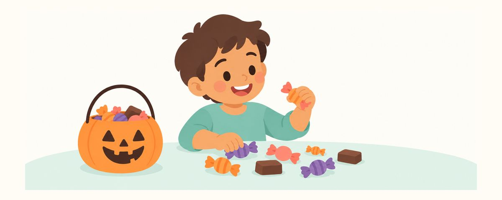

Сезон сладостей без лишнего кариеса: важнее не сколько, а как есть конфеты
Для зубов важнее не сколько конфет съедено, а как их едят. Как съесть сладкое за один раз и закончить, каких конфет избегать и что делать с оставшимися.
Коротко о главном
- Со сладостями важнее, как их едят, а не сколько
- Ешьте один раз, в определённое время, а не весь день
- Почистите зубы перед сном, а потом — только вода
Бывают дни, когда конфеты сыплются со всех сторон: Хеллоуин или, например, в Корее — день, когда дети дарят друг другу сладкие палочки. Ребёнок в восторге, а родители сразу думают о кариесе. Совсем запретить сладкое трудно, но если знать, как есть его с меньшим вредом для зубов, на душе станет спокойнее.
Важно не количество, а то, как долго сахар во рту
Бактерии во рту питаются сахаром и выделяют кислоту. Эта кислота понемногу растворяет поверхность зуба — с этого и начинается кариес. К счастью, слюна смывает кислоту и снова укрепляет поверхность зуба, но для этого ей нужно время.
Поэтому для зубов важнее не количество конфет, а то, как долго сахар остаётся во рту. Если весь день есть конфеты понемногу, зубы постоянно омываются кислотой, и слюна не успевает их восстановить. Съел одну, чуть позже ещё одну — и каждый раз кислота образуется заново. Даже при том же количестве гораздо лучше съесть всё в определённое время за один раз и на этом закончить. Мысль «если есть понемногу, будет меньше вреда» на деле оказывается наоборот. Ребёнку легко запомнить коротко: «Конфеты — в определённое время и за один раз».
Есть разница и между видами сладостей:
- Липкие конфеты. Ириски, мармелад и другие тягучие сладости надолго застревают между зубами и в бороздках моляров.
- Конфеты, которые долго держат во рту. Леденцы на палочке и твёрдые леденцы, пока тают, всё время выделяют сахар.
- То, что быстро тает. Шоколад быстро тает во рту и смывается. Если приходится выбирать, он лучше липких конфет.
Съели за один раз — и всё
Вместо запрета установите правила. Когда правила понятны, и споров с ребёнком меньше.
- Давайте конфеты сразу после еды или один раз в определённое время перекуса. Во время еды выделяется много слюны, и она помогает смыть кислоту.
- Избегайте липких конфет вроде ирисок и мармелада и тех, что долго держат во рту, например леденцов на палочке.
- После сладкого попейте воды или прополощите рот водой.
- Уберите оставшиеся конфеты с глаз и выдавайте понемногу только во время перекуса.
- Перед сном почистите зубы пастой с фтором. Детям до 3 лет — размером с рисовое зёрнышко, с 3 лет — размером с горошину.
- После вечерней чистки зубов — только вода.
Особенно трудно в первый вечер праздника. Увлёкшись, ребёнок ест конфеты допоздна, и чистку зубов легко пропустить. Пусть он съест свою долю на сегодня после ужина, а потом уберите конфеты и, как обычно, не пропускайте время чистки зубов.
Хорошо вместе с ребёнком разобрать полученные конфеты. Пусть выберет несколько любимых, а остальные можно раздать или отложить — тогда у ребёнка будет ощущение, что он решил сам.
Частая ошибка родителей — оставлять пакет конфет в детской или на обеденном столе. Если конфеты на виду, рука тянется к ним весь день. И вместо переменчивых правил вроде «сегодня ты много съел, значит, завтра ни одной» лучше последовательное правило — каждый день понемногу в одно и то же время. Так лучше и для ребёнка, и для зубов.
Частые вопросы
Сколько конфет в день можно давать?
Важнее не количество, а то, как часто и когда их едят. Даже при том же количестве, если съесть всё в определённое время за один раз и закончить, зубам меньше вреда.
Нужно ли чистить зубы сразу после конфет?
После сладкого попейте воды или прополощите рот водой. А самое важное за весь день — чистка зубов пастой с фтором перед сном.
Шоколад можно есть сколько угодно?
Шоколад быстро тает во рту и смывается, поэтому он лучше липких конфет. Но в нём всё равно есть сахар, так что, как и другие сладости, ешьте его за один раз в определённое время, а потом полощите рот водой.
Осталось слишком много конфет.
Уберите их с глаз и доставайте понемногу только во время перекуса. Если там, где вы живёте, проводят акции по сбору оставшихся конфет, можно воспользоваться и этим.
Когда идти к стоматологу
- Ребёнок говорит, что от конфет зуб ноет или болит
- На зубах видны коричневые или чёрные точки
- На поверхности зуба появилось белое матовое пятно
- Из-за липкой конфеты выпала пломба или коронка
- Сезон сладостей закончился, а с последнего осмотра прошло много времени
Получайте вовремя
Укажите дату рождения ребенка (или предполагаемую дату родов) в приложении «Зубной календарь», и эти статьи будут приходить вам напоминаниями в нужное время. Бесплатно и без регистрации.
Источники
Информация в приложении носит общий образовательный характер и не заменяет консультацию специалиста. По вопросам о состоянии зубов ребёнка обратитесь к стоматологу.